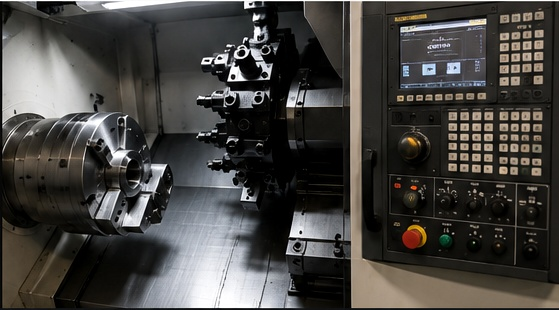
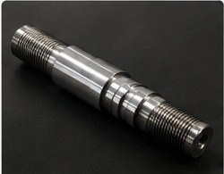
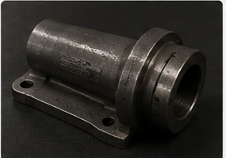
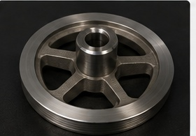
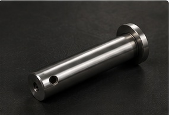
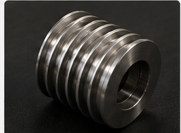

Hassas İşleme
Teknik resme uygun, hassas ölçülerde üretim.
CNC TORNA & PARÇA İMALATI · ANKARA / SİNCAN
CeBa Makine olarak hassas, güvenilir ve ihtiyaca özel CNC torna parçaları üretiyoruz.
Teknik resme uygun, hassas ölçülerde üretim.
Çeşitli metal parçalar için profesyonel imalat.
İşin gerektirdiği kalite standartlarına odaklı üretim.
Siparişlerinizi planlı şekilde teslim etmeye çalışıyoruz.
HAKKIMIZDA
CNC torna ve parça imalatı alanında müşterilerimize kaliteli, hassas ve ekonomik çözümler sunuyoruz.
Teknik resim ve müşteri taleplerine uygun olarak farklı ölçü ve özelliklerde torna parçaları üretiyoruz.

HİZMETLERİMİZ
Teknik resme veya numuneye göre hassas torna parçaları.
İhtiyaca özel ölçü ve toleranslarda parça üretimi.
Tekrarlı parçalarda düzenli ve planlı üretim desteği.
ÜRÜNLER / REFERANSLAR
CNC torna tezgâhlarımızda ürettiğimiz parçalardan bazıları.





İLETİŞİM
Üretmek istediğiniz parçayı, teknik resmi veya numuneyi gönderin; detayları konuşalım.